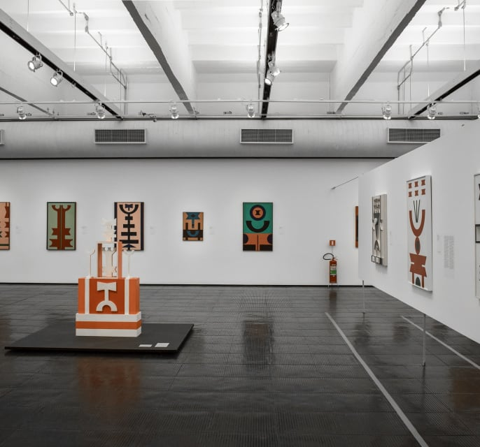
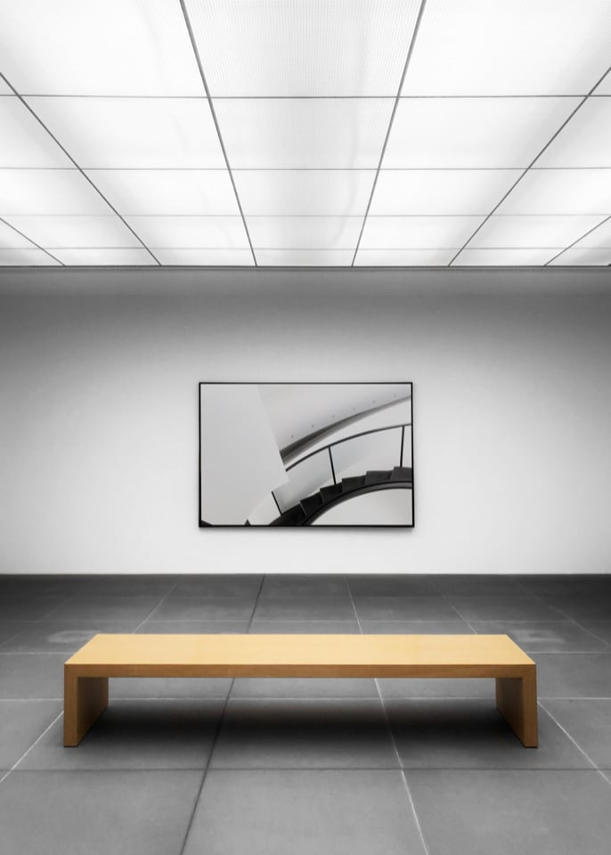
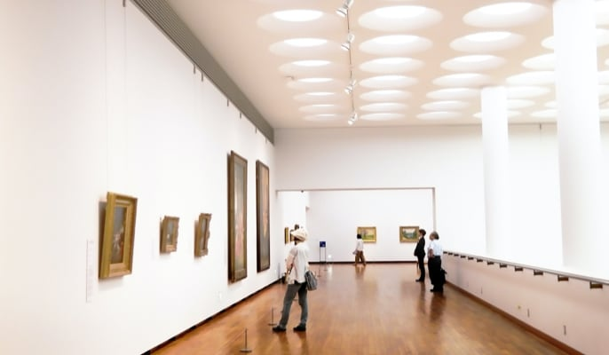

Modern Art Gallery
The arts in the collection of the Modern Art Gallery all started from a spark of inspiration. Will these pieces inspire you? Visit us and find out.
OUR LOCATION
The arts in the collection of the Modern Art Gallery all started from a spark of inspiration. Will these pieces inspire you? Visit us and find out.
OUR LOCATION

Wander through our distinct collections and find new insights about our artists. Dive into the details of their creative process.


We’re excited to welcome you to our gallery and see how our collections influence you.